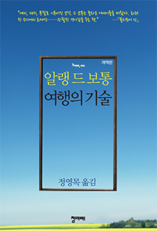

p11
그러나 우리는 결코 "오후 내내 여행할" 수 없다. 우리는 기차에 앉는다. 배 속에서는 점심에 먹은 것이 잘 내려가지 않는다. 좌석 덮개는 회색이다. 창문 밖으로 들판을 내다본다. 열차 안의 뒷자리를 돌아본다. 의식 속에서는 불안이 맴돌벼 북을 쳐댄다. 맞은편 좌석 위의 짐칸에 놓인 옷가방의 화물 표지를 본다. 창턱을 손가락으로 두드린다. 검지 손톱의 갈라진 부분에 실오라기가 낀다. 비가 내리기 시작한다. 빗물 한 방울이 먼지에 덮인 유리창에 진흙탕 길을 만들며 흘러내린다. 기차 티켓이 어디로 갔는지 궁금해진다. 들판을 돌아 본다. 계속 비가 내린다. 마침내 기차는 움직이기 시작한다. 파리 한 마리가 창문에 앉는다. 이 렇게 자세히 늘어놓아도 "그는 오후 내내 여행했다"라는 기만적인 문장 속에 숨어있는 수 많은 사건들 가운데 맨 처음 1분에 해당하는 이야기도 다하지 못한다.
p19
삶은 우리에게 바르닥 전자, 차 안의 안전 손잡이, 길을 잃은 개, 성탄절 카드, 꽉 찬 재떨이의 가장 자리에 앉았다가 중앙으로 자리를 옮긴 파리만 보여주려고 한다.
p19
그렇기 때문에 귀중한 요소들은 현실보다는 예술과 기대 속에서 더 쉽게 경험하게 된다. 기대감에 찬 상상력과 예술의 상상력은 생략과 압축을 감행한다. 이런 상상력은 따분한 시간들을 잘라내고, 우리의 관심을 곧바로 핵심적인 순간으로 이끌고 간다.
p59
영국의 안내판은 절대 그런 식이 아니다. 영국에서라면 노란색이 좀 옅을 것이고, 글자체는 노스탤지어를 불러일으키는 부드러운 쪽이었을 것이고, 외국 사람들이야 혼란을 느끼건 말건 외국어 표기는 하지 않을 것이고, 글자에 a가 이중적으로 들어가지는 않을 것이다. 특히 이 a의 반복에서 나는 다른 역사, 다른 사고바식의 존재를 느끼며 혼란을 경험한다.
p69
플로베르가 보기에 프랑스의 부르주아지는 가장 극단적인 내숭, 속물근성, 거드름, 인종차별, 오만의 진열장이었다.
p97
안내책자가 어느 유적지를 찬양한다는 것은 그곳을 찾는 사람들에게 자신의 권위 있는 평가에 부응할 만한 태도를 보이라고 압력을 넣는 것과 마찬가지였다.
p98
훔볼트는 이러한 위협을 느끼지 않았다. 그가 가본 곳을 그보다 먼저 여행한 유럽인은 거의 없었다.
p109
워즈워스는 한때 아무리 날씨가 나빠도 도브코티지 위의 과수원에서 하루도 빠짐없이 노래를 하는 푸른박새에 강한 애착을 가진 일이 있었다. 시인과 그의 누이는 이곳에서 아주 추운 첫겨울을 보내면서 그들과 마찬가지로 이 지역에 새로 살러 온 백조 한 쌍으로부터 영감을 받았는데, 이 백조는 워즈워스 남매보다 훨씬 더 강한 인내심으로 추위를 견뎌냈다.
p109
시인은 자연 - 그는 이 자연이 무엇보다도 새, 냇물, 수선화, 양으로 이루어져 있다고 생각했다 - 이 도시의 삶으로 인한 심리적 피해를 치료하는 불가결한 약이라고 말한다.
p173
러스킨은 영국의 시골을 여행하다가 제자들이 형편없는 그림을 제출하자 이렇게 말했다. "나는 보는 것이 그림보다 더 중요하다고 믿습니다. 나는 학생들이 그림을 배우기 위해서 자연을 보라고 가르치기보다는, 자연을 사랑하기 위해서 그림을 그리라고 가르치겠습니다."
p193
나는 집에 있다는 것에 절망을 느꼈다. 나의 삶을 보내야 할 곳 가운데 지구상에서 이보다 나쁜 곳은 찾아보기 힘들 것이라는 생각이 들었다.
p193
사막을 건너고, 빙산 위를 떠다니고, 밀림을 가로질렀으면서도, 그들의 영혼 속에서 그들이 본 것의 증거를 찾으려고 할 때는 아무것도 나오지 않는 사람들이 있다. 사비에르 드 메스트르는 분홍색과 파란색이 섞인 파자마를 입고 자신의 방 안에 있는 것에 만족하면서, 우리에게 먼 땅으로 떠나기 전에 우리가 이미 본 것에 다시 주목해보라고 슬며시 우리의 옆구리를 찌른다.
-------------------
겁나 섬세한 사람이다................